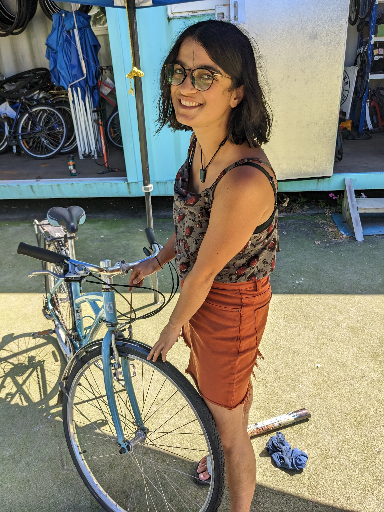

Kia ora! I’m Shanti - a freelance journalist based in Ōtautahi | Christchurch, New Zealand. I love writing about the natural world, technology and politics. My work has appeared in the The Guardian, New Zealand Geographic, The Spinoff, and other publications. I’ve also edited the Policy.nz site.